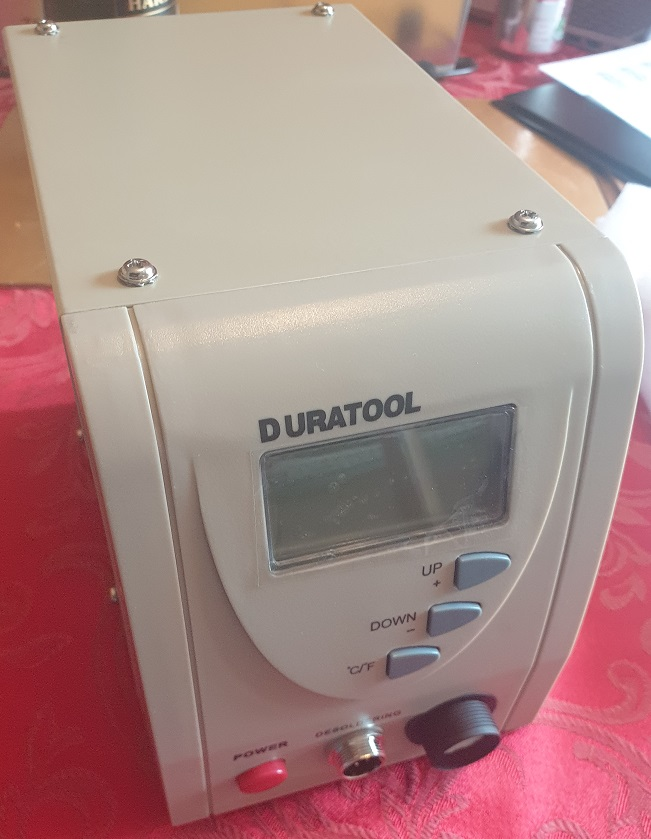
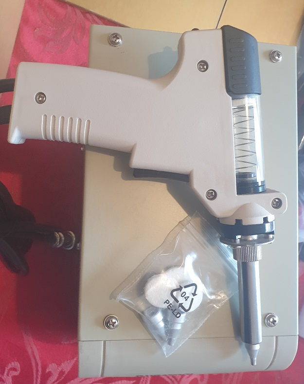

After doing lots of desoldering on my TC9BS (see here), I decided to buy a dedicated desoldering gun. There are times where solder suckers don't work well enough and leave solder in joints - meaning heat has to be applied to remove components, or solder reapplied to aid suction. Both of these issues can mean repeated heated and cooling of the pcb, resulting in damaged substrated or lifted pads and traces where the adhesive fails - a common problem on older PCBs. Solder braid is another option, but often requires substantial heating of the PCB and component - again not great. A desoldering gun, should, act as both a source of heat to reflow solder, and as a source of vacuum - continuous vacuum too, rather than the momentary vacuum offered by the solder sucker.
The duratool seemed to a be a good option - some postive reviews on YouTube videos, and at a reasonable price point - £70 from CPC. At least, it has to be worth the price of a few solder suckers (which do age and need replacing) and solder braid (which never really works and is an obvious consumable). After a couple of days, the D00672 arrived and was assembled - see Figures 1 and 2.
Figure 1: Front view of the Duratool D00672 - screen protector is still affixed, hence the distortion on the display.
Figure 2: Top view of the Duratool D00672 with the desoldering gun.
Straight away I was very impressed - it was around 45 seconds to reach 350C, which is plenty fast enough for me. The pump works on the pull of the trigger and desolders through hole joints with ease - I have included a short video showing the speed at which it desolders a row of pins. Forgive the lack of coordination - it was difficult to desolder and ensure it was in shot.
The D00672 comes with 3 different sizes of tip - I have stuck with the middle size, though they are all capable of desoldering the pad sizes shown in the video. I suppose the deciding factor for tip size will be the proximity of neighbouring components. Also included are three cleaning rods - these are very useful and I have found that using them regularly (after 10 or so joints) will help prevent solder from clogging the iron.
And it was this which is the only negative I have to report. After some desoldering, it is quite easily for the gun to clog. I suspect that the soldering head is not hot to the to very rear of the front metallic element, and so solder can solidify and accumulate before it reaches the filtering chamber. If it completely clogs you will probably notice by the change in tone of the pump as it struggles, or by being unable to removed solder. The cleaning rods can be used to push the solidified slug out - though it may take some effort and it is easy to slip and burn yourself when it does free. The best solution to this is to regularly suck some air for about 5 seconds, and give a brisk clean with the rods after about 10 joints or so. It takes no time really.
In conclusion, I would highly recommend the Duratool D00672 to someone who has a reasonable amount of desoldering to do. I have already saved hours of my life by being able to quickly desolder many dozens of pins. Indeed, components now cleanly fall out after barely 20 seconds of effort, and old and new PCBs are kept in good condition. However, if you need to do high quantity desoldering, it may be worth your time to explore more expensive offerings for something that doesn't suffer from the clogging problem - though I must say it is only quite minor.
v1.0: 03/01/22